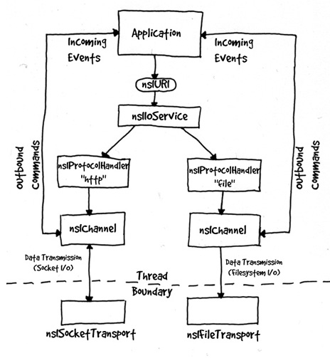

necko
Last updated: 11/08/99
Author: Jud Valeski
Necko is a modular networking library designed using the
mozilla open source medium. Necko has been designed to accomodate pluggable
protocols so developers can contribute their own protocol libraries that
can be dynamically loaded and used by applications utilizing necko.
Necko provides the following libraries.
necko - core networking functionality.
mimetype - MIME <-> file extension mapping
nkabout - about: protocol
nkdata - data: protocol
nkfile - file: protocol
nkftp - ftp: protocol
nkkeyword - keyword: protocol
nkresrc - resource: protocol
cnvts - stream converters
stremcnv - stream converter service
These libraries will change with time (a consolodation
strategy is underway) and illustrate the modularity of necko.
Architecture:
After a few iterations of our original design, the current
necko architecture looks something like this:

URLs
Necko's primary responsibility is moving data from one
location, to another location. These locations are represented in the form
we have all grown to know and love as a URIs. A URL implements the URI
interface. The URI interface does resource generic things like getting/setting
the scheme, or getting/setting the spec (everything beyond the first colon
':'). URLs provide getting/setting of paths, hosts, ports, filenames, etc.
URLs are the most commonly used form of a URI. Because of their importance,
necko provides its own standard implimentation of URLs (who's class id
is NS_STANDARDURL_CID) which does all of the standard parsing necessary
for most URLs. Necko also provides a simple URI implementation for convenience.
URI's (recall that a URL is just one implementation of a URI) can be created
as individual components independently of necko, or they can be retrieved
via the nsIIOService interface.
If you want to provide your own resource implementation
for foo URLs, you simply need to implement the nsIURI interface.
nsIIOService acts as the central point of access to URLs
and channels (nsIChannel) in necko. Given a string representation of a
URL, you can ask the nsIIOService for a URL instance representing that
string. Once you have a URL interface in hand (nsIURL), you have a completely
parsed representation of the original URL string, and you can query for
the various parts of the URL.
Handlers & Channels
nsIChannel provides a data access interface which allows
you to read or write data from or to a URI. There is a 1-to-1 relationship
between URIs and channels (if you go so far as to create a channel from
a URI, which is not required if all you need is a parsed representation
of a URI string). For every URI you want to transact with, there is exactly
one channel. In order to get a channel from a URI an intermediary layer
was introduced. Because a URI has no self knowledge about what "protocol"
it represents, another component is responsible for deciding which channel
implementation will be responsible for "loading" the URI. This layer is
the protocol handler layer. A protocol handler's primary responsibility
is to create channels for the scheme it has registered to handle. For example,
the HTTP protocol handler registers itself as the protocol handler for
"http." The HTTP protocol handler creates HTTP channels for HTTP URLs.
Once you have a channel you can read or write data from or to your URI.
nsIIOService
The nsIIOService does the protocol handler lookup for
you. However, you can certainly ask the nsIIOService for the protocol handler
for the URI you have, then ask the protocol handler for a channel on that
URI. In fact, most of what the nsIIOService does can be done independently
of the nsIIOService, by hand. The nsIIOService acts as a convenience interface,
consolodating several steps for the user.
To summarize... The nsIIOService creates URL instances.
It does this by looking up the protocol handler for the scheme of the URL,
then asking the protocol handler to create the URL. The nsIIOService can
also create channels. It does this by looking up the protocol handler and
asking it to create the channel.
The primary responsibility of protocol handlers is to
create channel instances that know how to interpret the protocol that the
handler registered for. However, a protocol handler implementation also
might "cache" the underlying transports so channels it creates can reuse
them later. The channel does the true work of protocol interpretation and
data movement (if any). Although the protocol handler creates channels,
protocol interpretation doesn't begin until the user initiates the transaction
using the nsIChannel api.
Receiving Data & nsIStreamListener
You can read or write, from or to a channel using either
the sychronous api, or the asynchronous api. If you want to move data asynchronously
you need to be able to receive callbacks using an implementation of nsIStreamListener.
An nsIStreamListener is told when the URI transaction has "started," when
data is available (in the case of reading data), and when it has "stopped."
It is up to the nsIStreamListener implementation to decide what to do with
these various notifications. The OnDataAvailable() notification provides
a chance for the nsIStreamListener to actually retrieve data that the channel
has acquired. One of the arguments to the OnDataAvailable() notification
is an nsIInputStream (which can be considered the underlying data).
Streams
Necko represents data in the form of streams (nsIBaseStream
is the root interface. nsIInputStream is read from. nsIOutputStream is
written to). Streams provide a generic interface to the data and allow
for many underlying implementations that permit multiple data sources to
be used. As a user, you don't care where the data came from, or where it
"is," as long as you get the data. The data may be in memory, it may be
on disk, or it may be located somewhere else. The point is that streams
provide a loose interface for data access.
If you initiate a synchronous transfer on a channel, you
are handed back a stream that you can read or write from or to. If you
initiate an asynchronous transfer, you receive callbacks that notify you
when things are happening. In the case of an asynchronous read... when
you receive the OnDataAvailable() callback, you are handed an nsIInputSteam
which you can read the data from (you will more than likely need to be
able to handle multiple OnDataAvailable() callbacks, buffering the data
you receive as necessary). The transaction is not complete until you receive
an "stopped" notification.
Transports
Underlying I/O functionality has been consolodated into
"transports." There is a transport for each type of I/O. Necko implements
a file transport and a socket transport that the protocol implementations
(channels) use to actually move bytes to and fro.
"How do I add my own protocol handler?"
Adding your own protocol handler is a straightforward
process in necko. There are a minimum of two interfaces you need to implement
in order to fit into the necko architecture: nsIProtocolHandler, and nsIChannel.
Recall, that the IOService will lookup your protocol handler
and ask it for a channel. After registering your protocol handler
necko will use it to create channels for any URIs it encounters
that have the scheme your protocol handler registered for. Please use existing
protocol handler's for reference (the DATA protocol handler is the simplest
handler necko provides, HTTP is a fairly complex (uses many classes) implementation
utilizing asynchronous I/O, and FTP provides an example of a protocol implementation
that creates an extra thread which uses synchronous I/O).
Dependencies
Necko requires the following libraries for linking:
nspr
xpcom